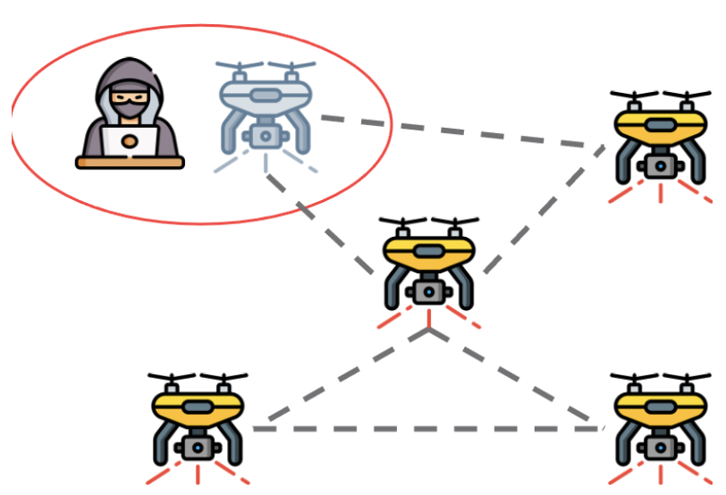
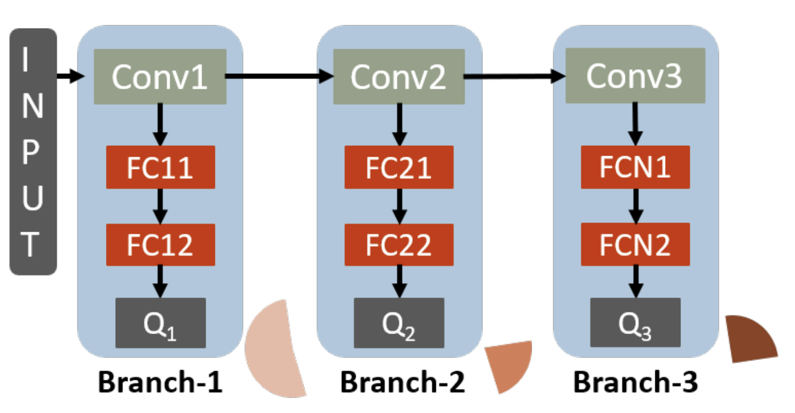
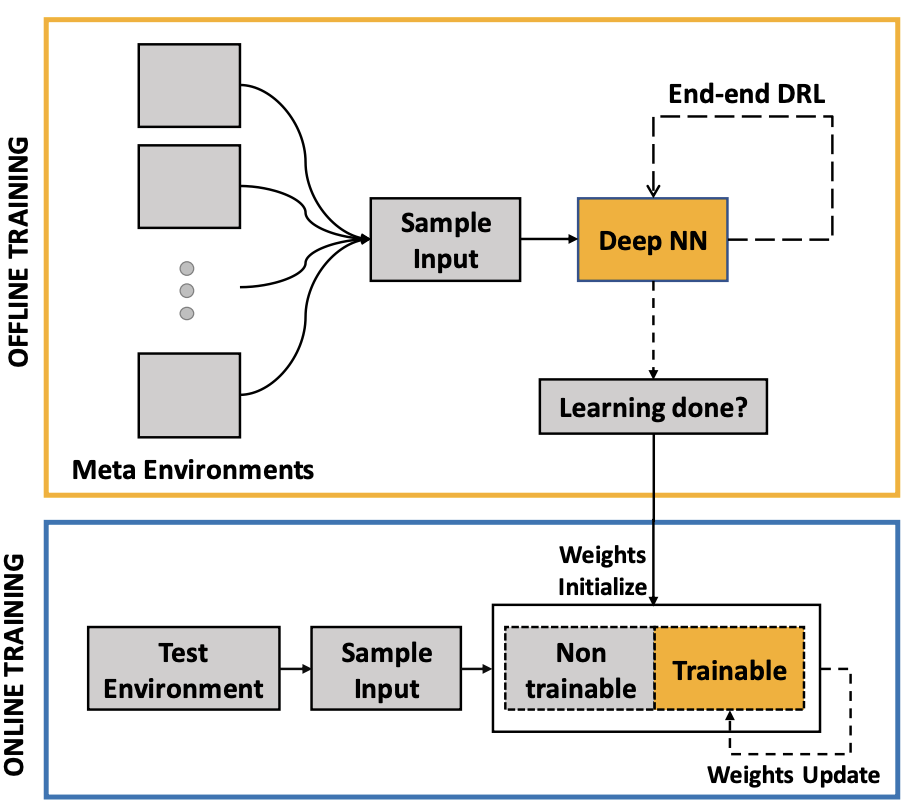

Research Experience
-
Multi-task Federated Reinforcement Learning
A decentralized policy gradient approach at learning a unified policy on multi-task RL problems. By combining consensus optimization with the policy gradient algorithm, we theoretically show the convergence of the multi-task algorithm. Currently working on the effects of adversaries in the MT-FedRL problem and proposing solutions to it. We argue that the common attack methods are not guaranteed to carry out a successful attack on Multi-task Federated Reinforcement Learning and propose an adaptive attack method with better attack performance. Furthermore, we modify the conventional federated reinforcement learning algorithm to address the issue of adversaries that works equally well with and without the adversaries. Relevant Papers:
[UAI2021],[arXiv2021],[DATE2022] -
RAPID-RL: A Reconfigurable Architecture with Preemptive-Exits for Efficient Deep-Reinforcement Learning
 Present-day Deep Reinforcement Learning (RL) systems show great promise towards building intelligent agents surpassing human-level performance. However, the computational complexity associated with the underlying deep neural networks (DNNs) leads to power-hungry implementations. This makes deep RL systems unsuitable for deployment on resource-constrained edge devices. To address this challenge, we propose a reconfigurable architecture with preemptive exits for efficient deep RL (RAPID-RL). RAPID-RL enables conditional activation of DNN layers based on the difficulty level of inputs. This allows to dynamically adjust the compute effort during inference while maintaining competitive performance. Relevant Papers:
[ICRA2022] -
Processing-In-Memory based DNN accelerator
Novel STT-MRAM based analogue Processing-In-Memory modular DNN accelerator providing end-to-end simulation framework that is required to find a power-performance optimized solution a given DNN topology. The simulator supports various layer types, logical to physical crossbar mapping schemes and crossbar configurations. A list of control parameters is used to overwrite DRAM read/write bandwidth, number of parallel inputs for pipe-lining and to select mapping scheme. The simulator can be used to design an accelerator for a given DNN. Results are compared to pure digital custom ASIC implementation showing orders of magnitude improvements in power-performance on widely accepted MLPerf benchmarks. Relevant Papers:
[AICAS2020],[Patent-1],[Patent-2] -
Hierarchical RL mapped onto Hierarchical memory sub-system
 This work presents a transfer learning (TL) followed by reinforcement learning (RL) algorithm mapped onto a hierarchical embedded
memory system to meet the stringent power budgets of autonomous drones. The power reduction is achieved by 1. TL on
meta-environments followed by online RL only on the last few layers of a deep convolutional neural network (CNN) instead of
end-to-end (E2E) RL and 2. Mapping of the algorithm onto a memory hierarchy where the pre-trained weights of all the conv layers and
the first few fully connected (FC) layers are stored in dense, low standby leakage Spin Transfer Torque (STT) RAM eNVM arrays and
the weights of the last few FC layers are stored in the on-die SRAM.
Relevant Papers:
This work presents a transfer learning (TL) followed by reinforcement learning (RL) algorithm mapped onto a hierarchical embedded
memory system to meet the stringent power budgets of autonomous drones. The power reduction is achieved by 1. TL on
meta-environments followed by online RL only on the last few layers of a deep convolutional neural network (CNN) instead of
end-to-end (E2E) RL and 2. Mapping of the algorithm onto a memory hierarchy where the pre-trained weights of all the conv layers and
the first few fully connected (FC) layers are stored in dense, low standby leakage Spin Transfer Torque (STT) RAM eNVM arrays and
the weights of the last few FC layers are stored in the on-die SRAM.
Relevant Papers: [M2VIP2018],[IEEE-ACCESS2019],[JETCAS2019],[DATE2019] -
RL based drone autonomous navigation
 Smart and agile drones are fast becoming ubiquitous at the edge of the cloud. The usage of these drones is constrained by their limited power and compute capability. In this work, we explore a Transfer Learning (TL) based approach to reduce the onboard computation required to train a deep neural network for autonomous navigation via Deep Reinforcement Learning for a target algorithmic performance. A library of 3D realistic meta-environments is manually designed using Unreal Gaming Engine and the network is trained end-to-end. These trained meta-weights are then used as initializers to the network in a test environment and fine-tuned for the last few fully connected layers. Relevant Papers:
[M2VIP2018],[IEEE-ACCESS2019],[JETCAS2019],[DATE2019]
Open Source Tools
-
PEDRA - Programmable Engine for Drone RL Applications
PEDRA is a programmable engine for Drone Reinforcement Learning (RL) applications. The engine is developed in Python and is module-wise programmable. PEDRA is targeted mainly at goal-oriented RL problems for drones, but can also be extended to other problems. The engine interfaces with Unreal gaming engine using AirSim to create the complete platform. PEDRA comes equip with a list of rich 3D realistic environments created using Unreal Gaming Engine that can be used for the underlying drone problem. Different level of details are added to make the environments look as realistic as possible. PEDRA is built onto the low level python modules provided by AirSim creating higher level python modules for the purpose of drone RL applications. Download:
[Website],[GitHub] -
MaskTheFace
MaskTheFace is computer vision-based script to mask faces in images. It uses a dlib based face landmarks detector to identify the face tilt and six key features of the face necessary for applying mask. Based on the face tilt, corresponding mask template is selected from the library of mask. The template mask is then transformed based on the six key features to fit perfectly on the face. Download:
[Website],[GitHub]